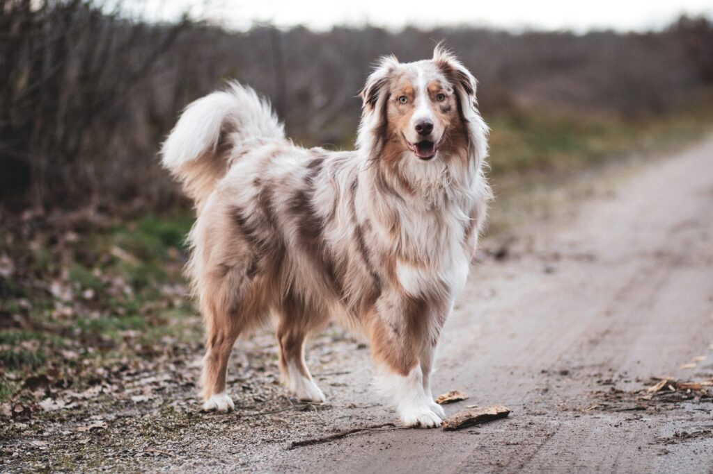

Золотистий Ретрівер
Красивий, добрий, розумний, повна відсутність агресії. Це все про золотистогоретрівера. Прекрасний компаньйон. Дуже активний, грайливий собака надзвичайно любить воду, тому що породу вивели як мисливську для апортування здобичі з водойми

Доберман
Доберман-пінчери вважаються собаками, орієнтованими на людей, які ласкаві й милі з людьми, якщо їх соціалізувати та дресирувати належним чином. Вони віддані своїм господарям і добре ставляться до дітей, якщо виховуються разом з ними; однак деякі добермани прив'язуються лише до однієї людини.

Вельш-коргі
Собака коргі неодмінно викличе посмішку в кожного, хто його побачить. На його лисячій мордочці завжди зберігається весела доброзичливість, розкішна шерсть незмінно блищить, а собака готовий будь-якої миті долучитися до активної гри зі своїм господарем або іншими тваринами

Йоркширський тер'єр
Йорки дуже популярні собаки. Їх відносять до декоративних порід. Мініатюрні особини володіють енергійним темпераментом і веселим характером. До того ж вони дуже милі і красиві.

Австралійська овчарка
Австралійська вівчарка - робоча собака. У вас багато енергії, і вам завжди потрібно чимось зайнятися. З цієї причини, перевершує у собачих видах спорту, як спритність, флайбол або фрізбі. Вони також чудові як пошуково-рятувальні собаки, а також собаки-поводирі та терапевти.

Самоїд
Активна, але не агресивна порода. Самоїди прекрасно ладнають з дітьми, люблять грати з ними, і дуже віддані своїм господарям. З ними потрібно багато гуляти, тому така порода підійде для активної сім'ї.

Німецька овчарка
Собака німецька вівчарка володіє неперевершеними службовими якостями, наділена божественною красою і досконало володіє мистецтвом дружити. Останнє може здатися неправдою, адже рішучий, суворий зовнішній вигляд, зайва пильність і крайня недовірливість, незалежність і тверда впевненість у характері не надають вівчарці видимого дружелюбності.

Акіта-іну
Акіта–іну це домінуюча порода. Правильна підготовка є важливою, і дресирування повинен проводити власник собаки. Оскільки Акіта настільки прив’язана до господаря, зв’язок між власником і собакою не повинен бути розірваний, коли дресируванням буде займатись кінолог в присутності власника пса.

Дворняга звичайна
Ви отримаєте дуже вдячного та відданого друга.
Такі тварини більш за все бояться знову бути покинутими. Тому часто вони набагато відданіші ніж породисті собаки.
Але пам’ятайте, що довіру свого улюбленця слід ще заслужити. Адже собака певний час провів у притулку чи на вулиці, і до людей може ставитися з деякою насторогою.